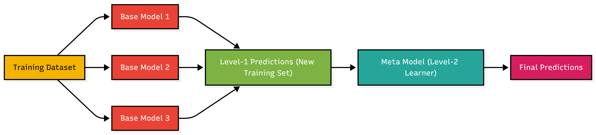

Meta-Stacking
Getting diverse models to work together for better predictions

Introduction
If you ask one expert for an opinion, they might be wrong. If you ask ten experts and take a vote, you're much more likely to get the right answer. That's the basic idea behind Meta-stacking.
It's an ensemble technique, but instead of just averaging the results of different models, we train a "manager" model (the meta-learner) to figure out which "employee" models (base learners) are telling the truth in different situations. It learns to weight their opinions to produce a final prediction that is usually more accurate than any single model could achieve on its own.
The Architecture
The process generally happens in two distinct levels. Think of it as a hierarchy:
Level 0: The Specialists (Base Learners)
First, we train a variety of different models on our data. Diversity is key here. You might mix a Random Forest, an SVM, and a Neural Network. Since they all learn differently, they make different kinds of mistakes. We need them to predict results on the data, but we have to be careful not to let them "cheat" by seeing the answers first. This is where Out-of-Fold (OOF) predictions come in — we use cross-validation to generate predictions for data points the model hasn't seen during training.
Level 1: The Manager (Meta-Learner)
Now we have a new dataset. Instead of the original raw features, our input is now the predictions made by the Level 0 models. The Meta-learner (usually a simpler model like Linear Regression or a shallow Gradient Boosting model) trains on these inputs.
Its job is effectively to learn: "Okay, when the Random Forest says 'Yes' but the SVM says 'No', the Random Forest is usually right. But if the Neural Net agrees with the SVM, I should trust them instead."
See it in Action
I've put together a notebook demonstrating how to implement this using Python. It covers the OOF prediction generation and the final stacking stage.